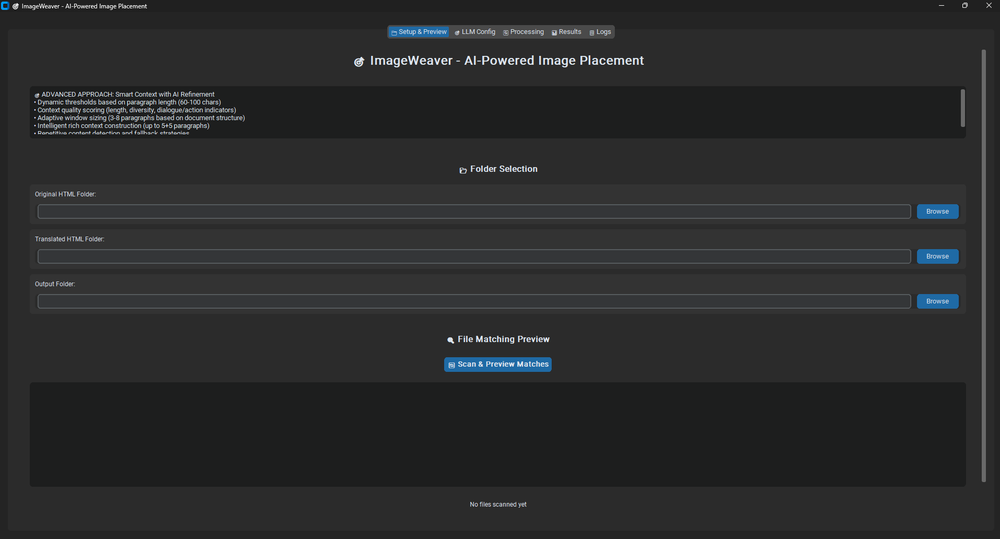

Tools & AI · Personal Project
An AI-powered tool that automatically restores images to their correct position in machine-translated documents, using LLM-based context analysis to decide where each one belongs.

A companion tool for the translation pipeline: when a document gets machine-translated, its images often end up detached from the paragraphs they originally illustrated. ImageWeaver re-matches each image back to its correct spot by having an LLM read the surrounding context on both sides of the translation and score where the image most plausibly belongs, instead of relying on fixed rules or matching by position alone. It scores context quality by length, diversity, and dialogue/action indicators, and adapts how many paragraphs of context it pulls in based on the document's structure.
Wrapped in a desktop GUI with dedicated folder selection, LLM configuration, and a file-matching preview step, so the placement can be reviewed before anything is written back out.